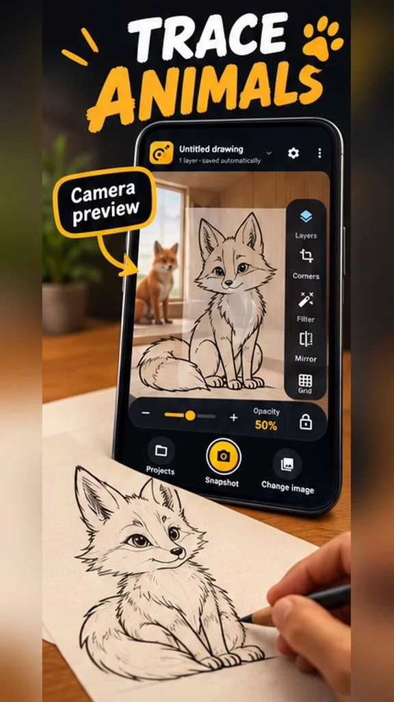
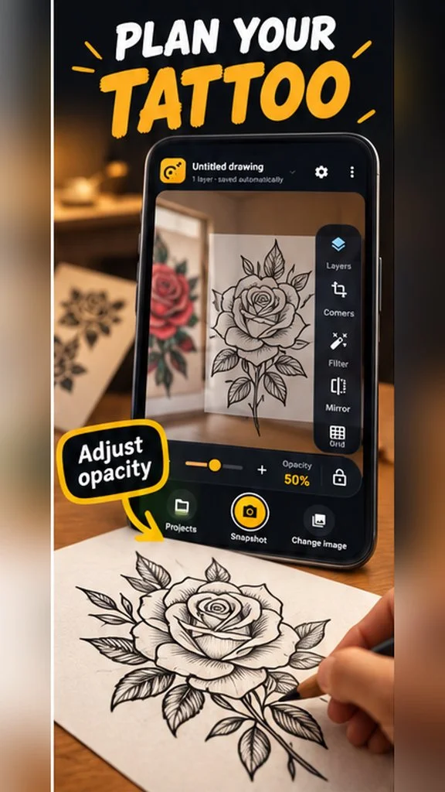
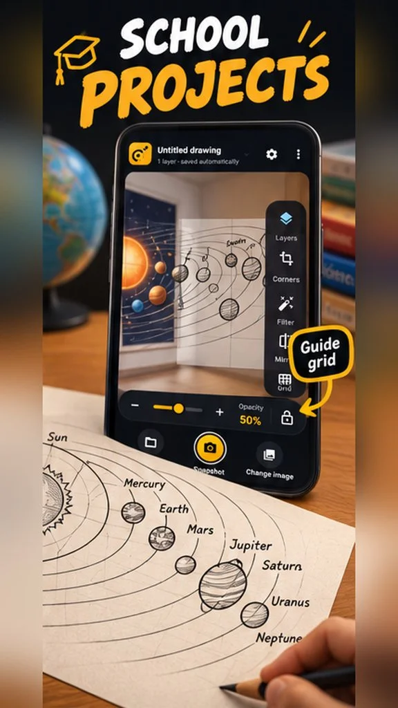

TraceCam
Focus on the lines in front of you.
Turn your phone into a calm, practical tracing studio. TraceCam places a reference image over the live view of your paper, so you can follow a sketch, study shapes, or practice drawing with your hands free.
What you can do
-
Align your reference
Choose an image and position it over your page. Adjust opacity, size, rotation, and perspective until it fits, then lock it in place when you are ready to draw.
-
Make the view work for you
Add image layers, choose blend modes, mirror references, and switch between original, outline, inverted, and black-and-white looks. Turn on rule-of-thirds or isometric guides.
-
Organize & capture
Projects save locally on your device. Search them, mark favorites, duplicate setups, pause camera frames for a steady view, and save composite tracing snapshots.
A closer look
Product previews from the Google Play listing.


